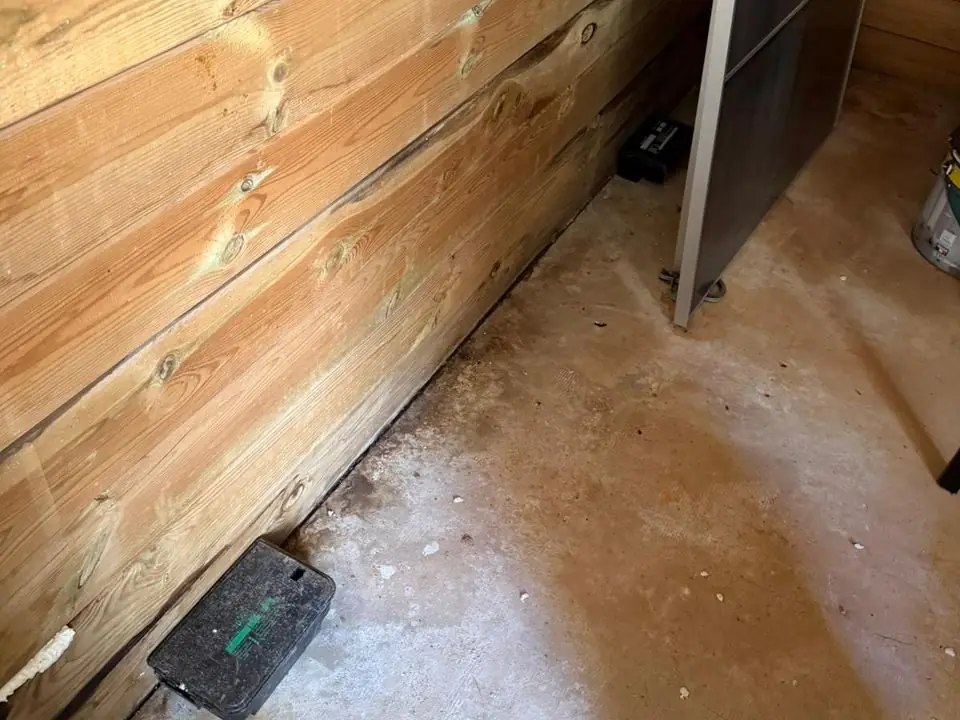

Exemple d'interventionDes bruits sous le parquet depuis trois semaines
- Ce qu'on a trouvé
- Des crottes derrière le frigo et un passage frotté de gras le long de la plinthe de la cuisine.
- La cause
- Le regard d'eaux usées de la cour n'était plus scellé. Les surmulots remontaient du réseau et passaient sous la porte de service.
- Ce qu'on a fait
- Trois postes d'appâtage sécurisés, le regard rescellé, un bas de porte posé. Contrôle à 10 jours : plus aucune consommation.
- Prix et passages
- Exemple : 2 passages à 150 € HT, soit 300 € HT
Le conseil du technicien : Un regard qui bouge sous le pied, c'est souvent la porte d'entrée des rats. Ça se vérifie en deux minutes.